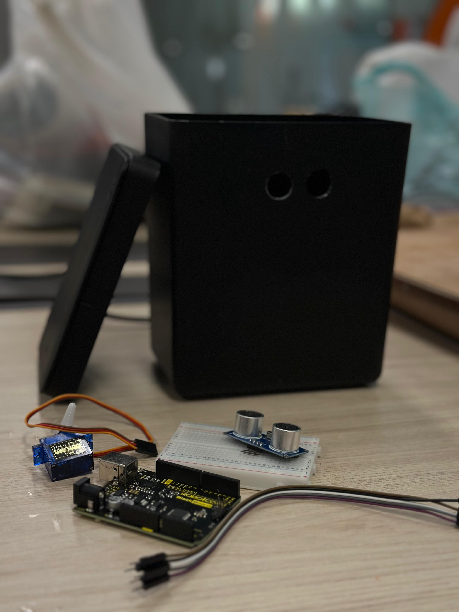
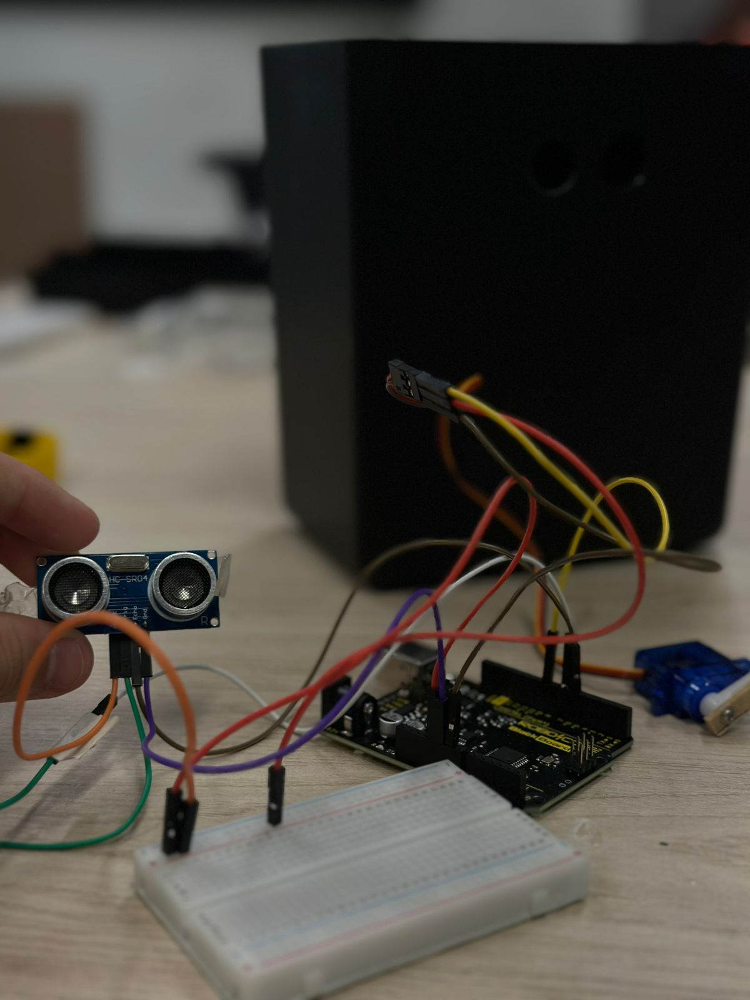
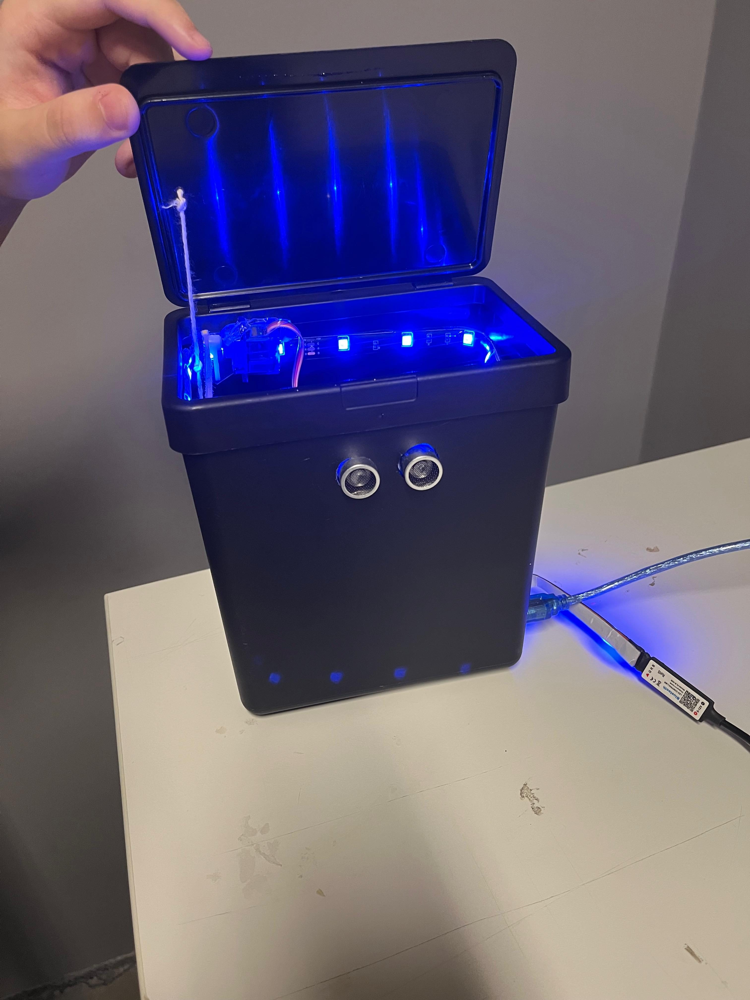

Passo a Passo da Lixeira Automática
Passo 1: Reunir os Materiais
Começamos separando todos os componentes necessários, como Arduino Uno, sensor ultrassônico, servo motor, jumpers, protoboard e a estrutura da lixeira.
Passo 2: Preparação da Estrutura
Utilizamos uma lixeira de plástico já pronta como base para o projeto. O único ajuste necessário foi a realização de dois furos frontais para acoplar o sensor ultrassônico. Essa etapa foi feita com o uso de uma furadeira de bancada, garantindo precisão no encaixe do sensor.
Passo 3: Conexão dos Componentes
Fizemos a conexão dos componentes na protoboard. O sensor ultrassônico foi ligado nos pinos digitais, e o servo motor também foi conectado corretamente ao Arduino.
Passo 4: Upload do Código
Utilizamos a IDE do Arduino para carregar o código no microcontrolador. O código controla o sensor ultrassônico e o servo motor: quando algo se aproxima da lixeira, a tampa se abre automaticamente e depois se fecha.
#include
int distancia = 0;
Ultrasonic ultrasonic(7, 6);
Servo servo_9;
void setup() {
servo_9.attach(9); // Define o pino do servo
Serial.begin(9600); // Inicia o monitor serial para depuração
}
void loop() {
distancia = ultrasonic.read(); // Converte tempo em distância (cm)
Serial.print("Distância: ");
Serial.print(distancia);
Serial.println(" cm");
if (distancia > 20) {
servo_9.write(0); // Objeto longe, servo na posição 0
} else {
servo_9.write(180); // Objeto próximo, servo gira para 180°
delay(2000); // Espera 2 segundos
}
delay(300); // Pequeno atraso para evitar leituras rápidas demais
Passo 5: Teste de Funcionamento
Após a montagem, testamos o funcionamento. Quando a mão se aproxima do sensor, a tampa abre automaticamente e depois se fecha.
